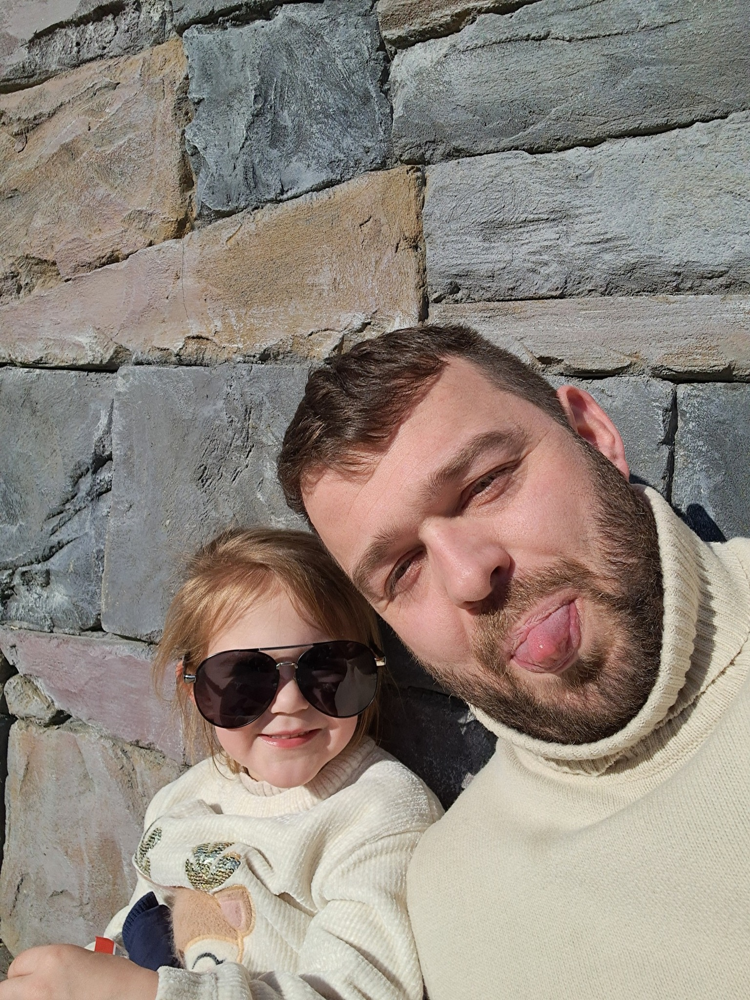

| Meet the Team |  |
|---|---|
| Naam: | Rory De Moor |
| Leeftijd: | 34 |
| Woonplaats: | Izegem (West-Vlaanderen) |
| Wanneer ben je begonnen met darten: | Ik ben nu een jaar en half bezig met darts. Daarvoor was het eerder sporadisch een pijltje gooien met familie en vrienden. |
| 1ste dartpijlen: | Winmau black-out 23gr |
| Darts die ik gebruik: | Michael Smith unicorn noir 24gr |
| Favoriete pro dartspeler: | Luke Littler, hate him or love him... Als 18 jarige zo snel kunnen bereiken wat hij nu doet... |
| Favoriete dartsmerk: | Unicorn, winmau, target |
| Tip voor iedereen: | Er zouden heel veel tips kunnen komen... Misschien eentje om mee te pakken niet enkel in darts! Leer met je ogen bij anderen en speel je eigen spel zoals jij je spel speelt! |